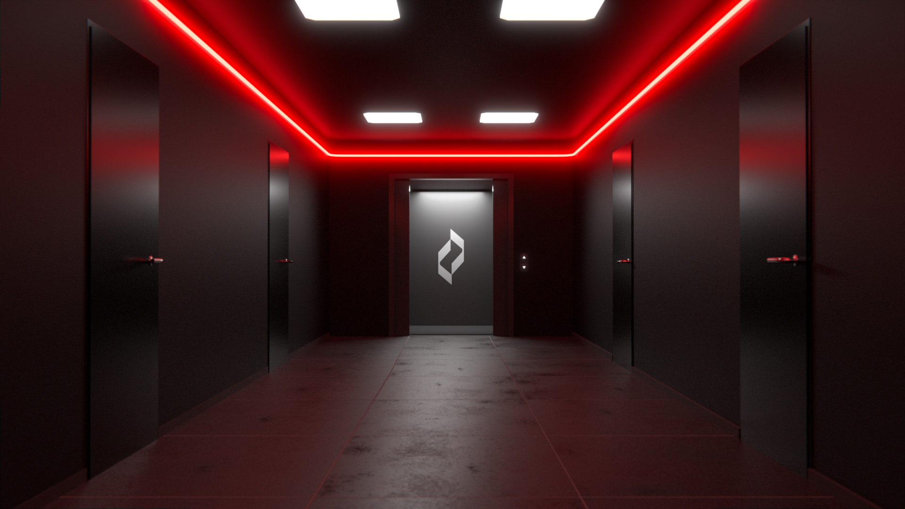
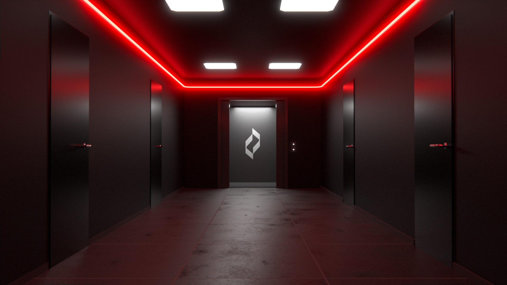
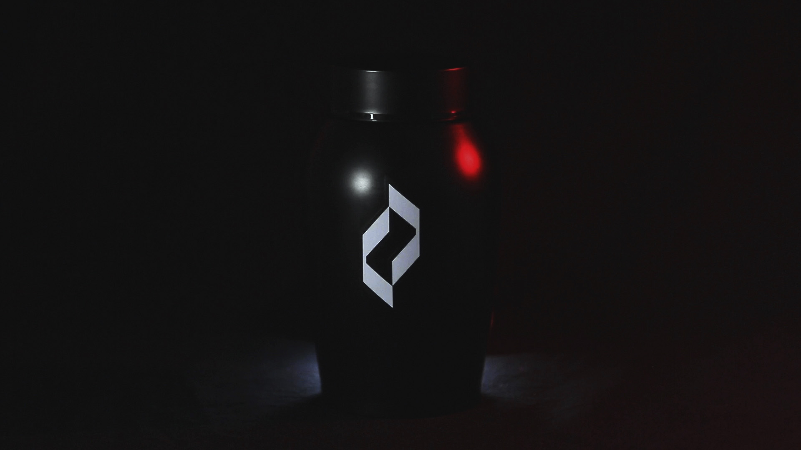
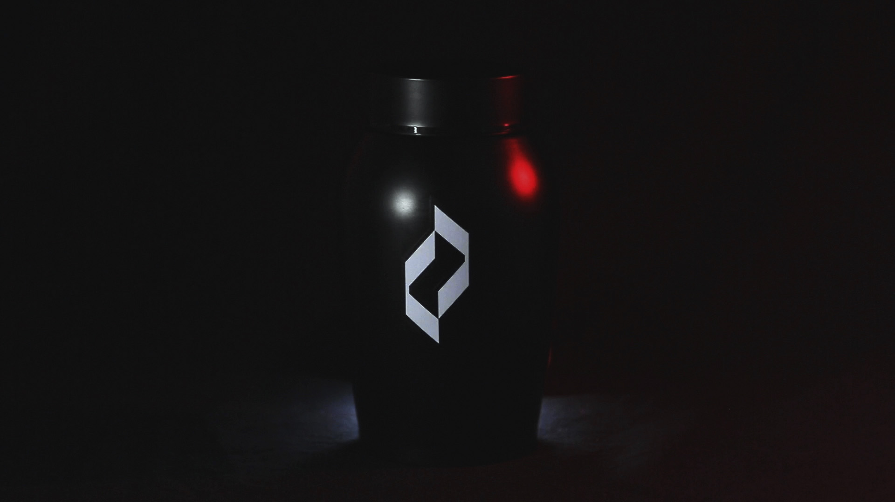

Ash è una multinazionale che si occupa della produzione di energia elettrica. In seguito alla crisi dei combustibili fossili, ha effettuato numerose ricerche in merito, giungendo ad una soluzione definitiva: Flogisto, il nuovo servizio che permette di ricavare energia elettrica a partire dalla combustione dei corpi umani.
Ash is a multinational corporation that has been in the power generation business since 2050. In the aftermath of the fossil fuel crisis, Ash has carried out a huge research on the subject and came to a decisive solution: Flogisto, a new service that generates electricity from the combustion of human bodies

 
